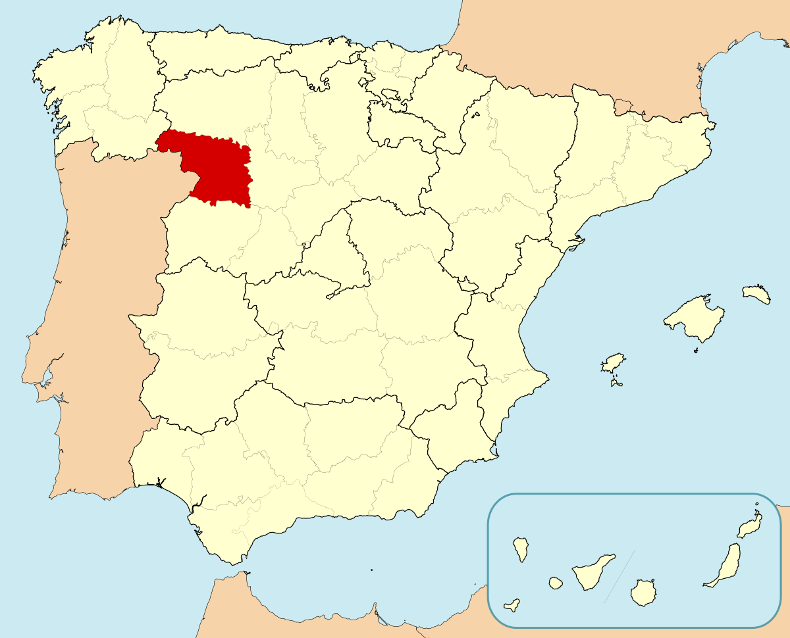
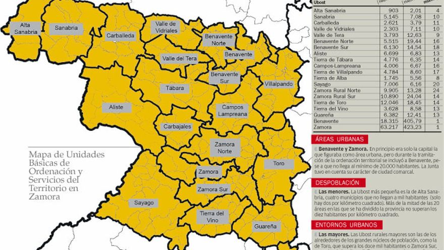
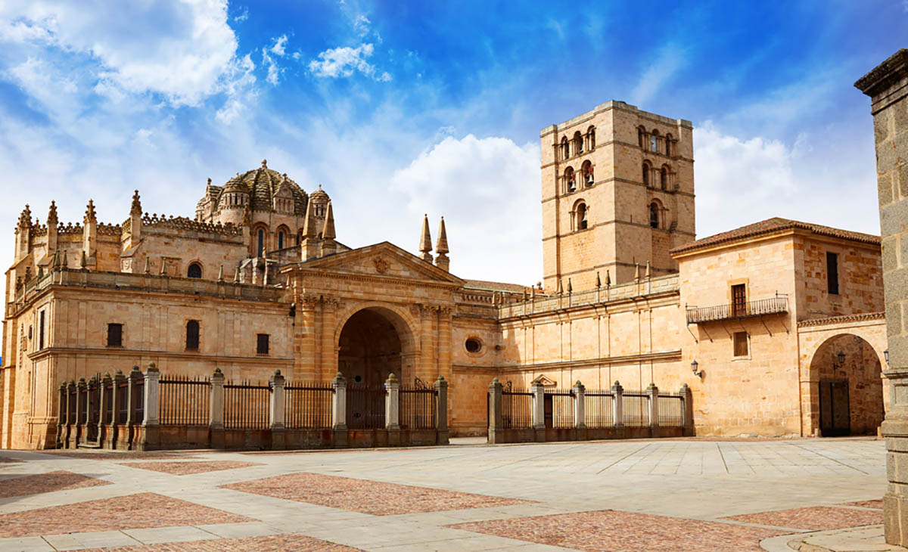
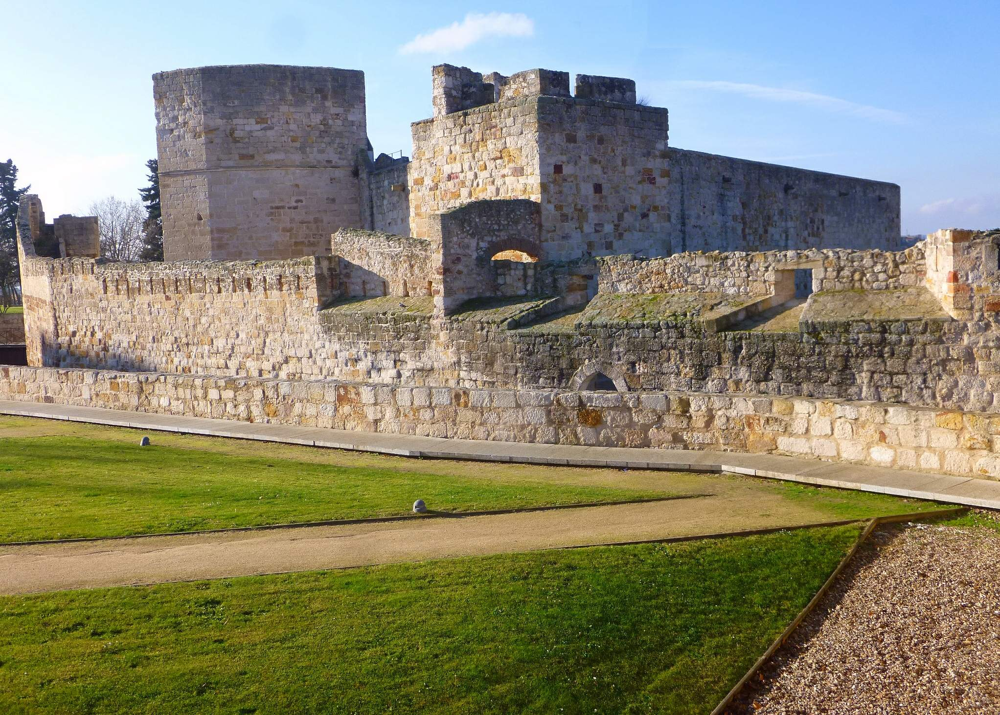
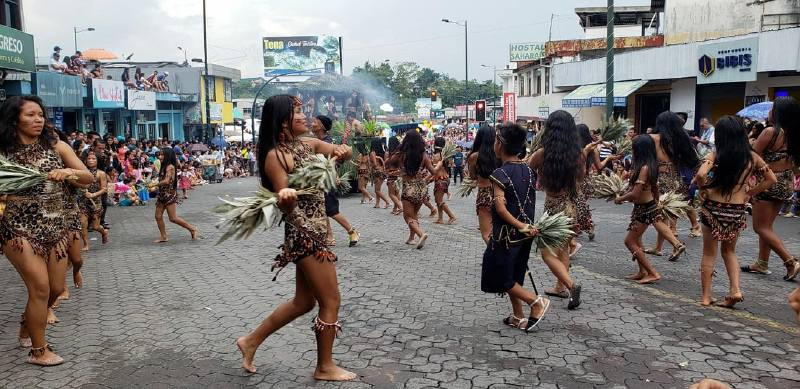
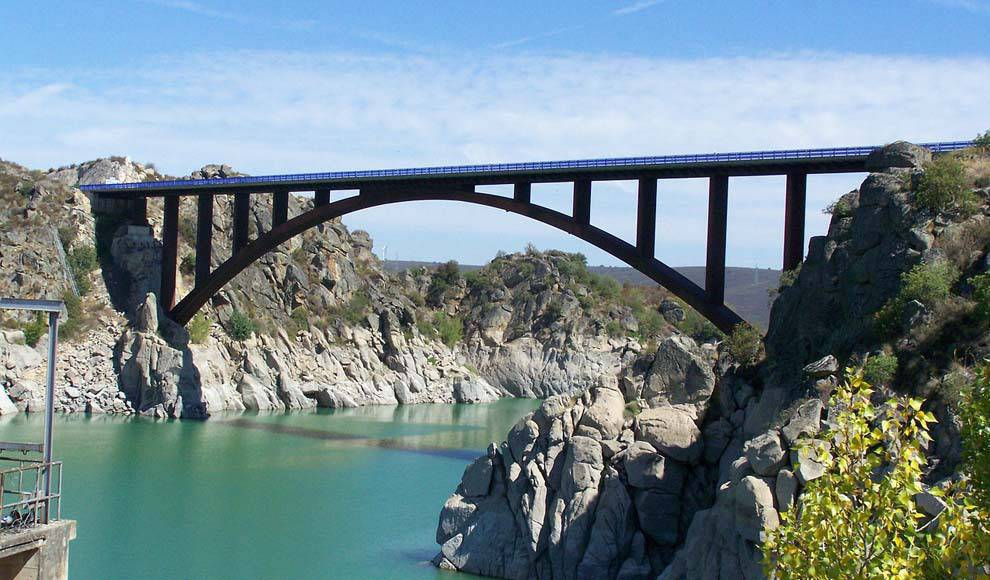

Informacion
Localización
Localidades principales
Geografía de la provincia
Historia
Cultura
Naturaleza
Tradiciones
Otros aspectos de interés
Zamora
_______________________________________________________________________________________________________________________________________________________________
Localización
Zamora es un municipio y ciudad española ubicada entre el centro y el noroeste de la península ibérica, capital de la provincia homónima, en la comunidad
autónoma de Castilla y León, cerca de la frontera con Portugal y a una altitud de 652 metros sobre el nivel del mar.

_______________________________________________________________________________________________________________________________________________________________
Localidades principales
Localización Province Zamora : País España, Comunidad Autónoma Castilla y León.
Grandes ciudades : Zamora, Benavente, Toro, Morales del Vino, Villaralbo, Moraleja del Vino, Villalpando, Fuentesaúco, San Cristóbal de Entreviñas,
Puebla de Sanabria, Fermoselle, Alcañices, Santa Cristina de la Polvorosa, Coreses, Bermillo de Sayago, Galende, Morales de Toro, Monfarracinos, Corrales
del Vino, Santibáñez de Vidriales, Roales del Pan, Trabazos, Villanueva del Campo, Camarzana de Tera, Fonfría, Tábara, La Bóveda de Toro, Fuentelapeña,
Villabuena del Puente, El Perdigón, Burganes de Valverde, Quiruelas de Vidriales, Riofrío de Aliste, Muelas del Pan, Manganeses de la Polvorosa, Montamarta,
Cobreros, Morales del Rey, Villar del Buey y Pereruela.

_______________________________________________________________________________________________________________________________________________________________
Geografía de la provincia
Ubicacion
El término municipal de Zamora tiene una extensión de 149,28 km². Es la capital de provincia situada a menos altitud de la Meseta Norte y también es capital de la provincia homónima y pertenece a la Comunidad Autónoma de Castilla y León. Se ubica en el curso medio del río Duero, con una configuración longitudinal a lo largo del mismo, en la extensa región que forma la Meseta Norte, la parte de la Meseta Central situada al septentrión del sistema Central, en la zona noroeste de la península ibérica.43 Presenta un paisaje llano, y con escasa vegetación a causa de su clima mediterráneo con rasgos de continentalidad.La parte oriental está sobre la vega del río y actúa como frontera con las comarcas de Tierra del Pan y Tierra del Vino, situadas al norte y al sur respectivamente. La parte occidental es por donde se separa del río hacia el norte y actúa de frontera con las comarcas de Tierra de Alba y de Sayago.
El núcleo principal del casco urbano –con una disposición muy alargada y en buena parte rodeado por murallas– se alza sobre una amplia meseta rocosa (la "peña tajada" de la que habla el Romancero Viejo) de 26 a 32 metros de altura, emplazada al borde del río Duero, que la ciñe por el sur, características que le valieron el sobrenombre de "la bien cercada". La altitud es de 652,6 m s. n. m.
Hidrografia
La red hidrográfica de Zamora tiene como eje vertebrador al río Duero, que atraviesa el municipio de este a oeste. Al él se incorporan sus afluentes Valderaduey y Esla, si bien este solo aparece en el límite oeste del término municipal (cola de la presa de Ricobayo). También forman parte de la red fluvial varios arroyos, aunque su importancia hidrológica es muy pequeña, siendo mayor su relevancia desde el punto de vista paisajístico. Entre ellos destacan el de Valderrey, La Fresneda, los dos sobre la margen derecha, y el del Zape sobre la izquierda. Por esta última van también el Arroyo Morisco y el de Rabiche, ambos de recorrido muy corto y en los que además la acción antrópica ha alterado su aspecto natural, asemejándolos más a acequias. La entrada del Duero al término municipal de Zamora está flanqueada por una vega grande de regadío que tiene una densa red de canales y acequias. Aguas abajo de la ciudad empieza el encajonamiento del río.Las aguas subterráneas se concentran en la zona geológica de la Era Terciaria, debido a la alternancia de capas permeables y capas impermeables, originándose importantes acumulaciones de agua susceptible de ser aprovechada por pequeñas explotaciones agrícolas y ganaderas. Esta abundancia de acuíferos es especialmente intensa en la parte de contacto con los terrenos de la Era Paleozoica, generándose charcas en las cercanías de los arroyos de La Fresneda y del Zape, y existiendo también fuentes como la de la Salud, además de pozos de riego.
Ver video desde youtube - Video realizado por Profe Camila Zubicueta
_______________________________________________________________________________________________________________________________________________________________
Historia
Edad Antigua
La ciudad fue fundada a inicios de la Edad del Bronce, siendo posteriormente ocupada durante la Edad de Hierro por el pueblo celta de los vacceos, que la denominaron Ocalam. El asentamiento inicial se produjo en la almendra delimitada por el Castillo y la costanilla de San Ildefonso, un emplazamiento estratégico al tratarse de una meseta rocosa defendida por el río Duero, en la que se ubicó un castro.5El poblamiento se mantuvo durante el Imperio romano. De hecho, con frecuencia se la ha identificado con la importante mansio y civitas de "Ocelo Durii" (Ojo del Duero). Según algunos tal población correspondería en realidad con la actual Villalazán, doce kilómetros al este, también a orillas del Duero, y por la que transcurría la Vía de la Plata.
Según otros estudiosos, en cambio, sí que se asentaría en Zamora capital. A pesar de que hasta ahora no hayan aparecido en la ciudad restos arqueológicos de entidad correspondientes a este periodo (lo que no descarta posibles sorpresas futuras si se hicieran más excavaciones, como ocurrió recientemente con el destacado yacimiento de cerámica musulmana hallado en el solar en el que se ubica la sede del Consejo Consultivo de Castilla y León), la toponimia sería un argumento en favor de la capital zamorana, ya que "Okelo Duri" originalmente significaba peñasco prominente (las Peñas de Santa Marta) y por otra parte en la orilla opuesta del río se sitúa el barrio de San Frontis, nombre de origen romano, "sub frontis pontis", por debajo del puente. Precisamente a esa altura del cauce estuvo en pie hasta 1310 el Puente Viejo o de Olivares, del que aún existen algunos restos visibles. Además existe un mapa tardorromano en el que aparece el término "Okelo Duri" que se correspondería con Zamora.57 A esta época corresponde Viriato, el "terror romanorum", que celebraba sus victorias sobre los romanos (ocho en total) arrancando un jirón de sus rojos estandartes y poniéndolo en su lanza, lo cual es precisamente el origen de la bandera de la ciudad (y de la provincia), la "Seña Bermeja". Se le considera nacido en Torrefrades, pueblo de la comarca de Sayago o en la provincia de Huelva cuando aun se pensaba que el territorio de los lusitanos tenía otras fronteras y no estaba bien conocido, por lo que otros sitúan su origen en Portugal mismo hacia el Monte Herminius, en la sierra de la Estrella.
La primera referencia documental que se tiene de la ciudad aparece en el Parrochiale Suevum del año 569, en el que se la cita con el nombre de "Senimure", incluida en la diócesis de Asturica, perteneciente al Reino Suevo. Así aparece también en unas acuñaciones de monedas de Sisebuto en el siglo posterior.38 Los nombres árabes de la ciudad fueron "Azemur" (olivar silvestre) y "Semurah" (ciudad de las turquesas). El nombre actual parece proceder de una de estas dos últimas etapas, y es citado como tal en el Salmanticense como "una de las plazas recobradas por Alfonso I a los moros".

Edad Media
Durante la Edad Media, Zamora volvió a ser tomada y destruida por los musulmanes al mando del emir Mohamed y después reconquistada por los cristianos en el reinado del rey Alfonso II de Asturias, el Casto, siendo de nuevo fortificada. El rey Alfonso III de Asturias, el Magno la repobló con mozárabes toledanos en 893, rodeándola de murallas y dotándola incluso de palacios y baños, convirtiéndose, por su emplazamiento y características, en la ciudad fortaleza más importante de los reinos cristianos. La repoblación de la ciudad de Zamora fue descrita por Isa ibn Ahmad al-Razi de la siguiente forma: "dirigiose Alfonso hijo de Ordoño, rey de Galicia, a la ciudad de Zamora, la despoblada, y la construyó y la urbanizó, y la fortificó y pobló con cristianos, y restauró todos sus contornos. Sus constructores eran gente de Toledo, y sus defensas fueron erigidas a costa de un hombre agemí de entre ellos. Así, pues, desde aquel momento comenzó a florecer la ciudad, y sus poblados se fueron uniendo unos a otros, y las gentes de la frontera fueron a tomar sitio en ella."58El periodo comprendido entre los siglos X y XIII es el de mayor relevancia de Zamora dentro del contexto hispánico. La batalla de Simancas (939) dio a Ramiro II de León el control de los valles del Duero y del Tormes, convirtiéndose la capital zamorana (por su posición y su ventajoso emplazamiento, en lo alto de una meseta rocosa al borde del río) en una de las principales plazas fuertes que aseguraban la frontera. Su importancia fue decayendo sin embargo a partir de la batalla de las Navas de Tolosa (1212), que abrió el sur peninsular a los reinos cristianos, perdiendo con ello Zamora su trascendencia estratégica.
Zamora fue una de las plazas más importantes del Reino de León, del que formó parte. Además inició la etapa de mayor esplendor político, económico y arquitectónico. El paulatino desplazamiento de la frontera hacia el sur, del Duero al Tormes, favoreció este progreso, solo quebrado por las aceifas de Almanzor. Muhammad ibn 'Abd-Allah ibn Abū 'Āmir (en árabe محمد بن عبد أبو عامر ), llamado Al-Mansūr (المنصور) (españolizado Almanzor), el Victorioso, lanzó en 981 un primer ataque contra la ciudad, que fue arrasada. En 986 rompió hostilidades con el rey Bermudo II, atacando Coímbra al año siguiente (dejándola de tal manera que durante siete años estuvo desierta) y dirigiéndose contra el propio León en 988, destruyendo todo lo que encontraba a su paso. Bermudo se refugió en Zamora pero nada pudo contener el avance enemigo. León, después de resistir cuatro días, fue asaltado, saqueado, incendiado y sus murallas destruidas, Zamora capituló y Bermudo hubo de huir a Galicia. En 997 Zamora volvió a sufrir la acción del musulmán, pues en su camino hacia Santiago de Compostela arrasó de nuevo la ciudad, además de León y Astorga.
Edad Moderna
Después de su apogeo en el siglo XII y conforme se desplazaba hacia el sur la frontera de la reconquista de la península por los reyes cristianos, Zamora fue perdiendo importancia estratégica, económica y social. Después del descubrimiento de América, muchos zamoranos se vieron obligados por la pobreza económica de la zona a emigrar al continente, especialmente a América del Sur donde se han fundado muchas otras ciudades con su mismo nombre.Edad Contemporanea
A lo largo del siglo XVIII la ciudad vivió una fuerte recuperación, que se vio favorecida por la protección de que gozó por parte de la Corona, proceso que se vio interrumpido abruptamente por la invasión napoleónica. A comienzos de 1809, durante la Guerra de la Independencia, Zamora se levantó en armas frente a las tropas francesas de Lapisse, Maupetit y Soulignac. Los zamoranos salieron a su encuentro al puente de Villagodio, sobre el río Valderaduey, a tres kilómetros de la ciudad, donde trabaron con los franceses una sangrienta y desigual pelea que duró tanto como la luz del día; viéndose al fin en la necesidad de retirarse cerca del anochecer ante su situación de inferioridad manifiesta, tras contar con la pérdida de ciento treinta zamoranos muertos y doble número de heridos, no sin antes haber causado bastantes bajas en las filas enemigas. La temeraria hazaña es recordada mediante un obelisco conmemorativo, en el que figura la siguiente leyenda: “Los zamoranos de 1908 dedican esta inscripción a los héroes del 6 de enero de 1809. Este monumento fue erigido en 1819”.59 La ocupación duró tres años, hasta 1812, y provocó además graves pérdidas al patrimonio artístico de la ciudad.Los años que siguieron a la liberación fueron un periodo de decadencia y aislamiento. Las manufacturas estaban prácticamente limitadas a actividades meramente artesanales, siendo la industria propiamente dicha muy escasa. El comercio además era deficitario, vendiéndose al exterior tan solo cereales y vino. El traslado de la Capitanía General a Valladolid agravó aún más la situación, con el resultado de que en 1850 la población era de únicamente 9000 habitantes. La Desamortización supuso una convulsión que tuvo repercusiones en los campos de la economía, el urbanismo y el patrimonio artístico. A ese fenómeno se unió el abandono de la ciudad por parte de la nobleza.
Por otro lado, la división territorial de España en 1833 ratificó la definitiva capitalidad provincial de la ciudad de Zamora, clasificándola dentro de la Región Leonesa que, como todas las regiones españolas de la época, careció de competencias administrativas.73 Un año más tarde, la ciudad de Zamora fue de nuevo designada para ser cabeza del partido judicial homónimo.74

_______________________________________________________________________________________________________________________________________________________________
Cultura
Museos
- Museo de Zamora. Consta de una sección dedicada a la arqueología, otra a las bellas artes y una tercera dedicada a la historia de la ciudad. En la primera destacan el ajuar campaniforme de Villabuena del Puente, los dos Tesoros prerromanos de Arrabalde -hallados en el Castro de las Labradas-, mosaicos y pinturas murales de la villa romana de Requejo (Santa Cristina de la Polvorosa) y las cruces votivas visigodas de oro del Tesorillo de Villafáfila. En la segunda se pueden encontrar, entre otros, esculturas de los siglos XIV al XVIII.
- Museo Catedralicio de Zamora. Ubicado en la catedral, en él destaca su colección de tapices de los siglos XV y XVI (serie "Guerras de Troya" y "campañas militares de Aníbal"), considerada una de las mejores del mundo.
- Museo Etnográfico de Castilla y León. Es un museo dependiente de la Junta de Castilla y León, formando parte de la Red de Museos Regionales. Está dedicado a mostrar la riqueza etnográfica de esta comunidad autónoma.
- Museo de Semana Santa de Zamora. Fue creado en 1957 por la Junta Pro-Semana Santa con el fin de mostrar y proteger los grupos escultóricos de las procesiones, abriendo sus puertas al público por primera vez en 1964. Exhibe 37 pasos procesionales, entre los que destacan los de Ramón Álvarez y Mariano Benlliure.
- Museo Baltasar Lobo. Muestra varias decenas de obras del escultor de Cerecinos de Campos Baltasar Lobo (1910-1993), repartidas entre el Castillo y la vecina Casa de los Gigantes.
- Centro Museo Pedagógico de la Universidad de Salamanca (Cemupe). Inaugurado en 2011 recrea cómo eran las aulas durante la Segunda República y el franquismo.
- Museo Diocesano de Zamora. Inaugurado en julio de 2012, tiene su sede en la Iglesia de Santo Tomé.

_______________________________________________________________________________________________________________________________________________________________
Naturaleza
La situación geográfica de Zamora da lugar a una naturaleza perfecta llena de contrastes con una gran variedad de paisajes gracias a la diversidad de los territorios que conforman sus comarcas, ninguna de las cuales se parecen entre sí, aunque unas complementan a las otras.
Las características dispares de sus espacios naturales, algunos de ellos aún desconocidos, hacen de la provincia de Zamora un referente en el patrimonio natural y un lugar perfecto para experimentar nuevas sensaciones.
En el Oeste destacan Sayago, Aliste y Sanabria y en frente en la otra mitad Este de la provincia, Benavente y los Valles, la Tierra de Campos y del Pan y el Duero Bajo, que integran las comarcas de Toro, Guareña y Tierra del Vino.
Ver video desde youtube - Video realizado por Viajandisimo
Comenzando por el Noroeste, Sanabria delimita León con la sierra Cabrera y Orense con la de La Calva, acoge un sistema de lagunas y lagos de origen glacial,
con el Lago de Sanabria a la cabeza. Sierras y más sierras ofrece la orografía sanabresa sin olvidar la que contiene los picos más elevados y la mayor cantidad
de nieve durante todo el año: la Sierra Segundera. La sierra de la Atalaya da paso a la Sierra de la Culebra para adentrase en Aliste, con una topografía
ondulada cubierta de matorrales, donde abundan los bosques de encinas, robles y castaños que dan cobijo a la población de lobos más densa de la Península.
El río Aliste atraviesa la comarca y la llena de numerosos afluentes de aguas cristalinas incontaminadas en cuyas riberas se asientan pequeños pueblos
pintorescos. Sayago, paisaje granítico sobre una tierra llana delimitada al Norte por el río Duero que la separa de Aliste y que al oeste, en su frontera
natural con Portugal, conforma un profundo y larguísimo cañón esculpido por el río en una masa granítica que son los conocidos Arribes del Duero, en cuyas
agrestes laderas se cobija una muestra importante de la fauna provincial. Encinares y peñascos se mezclan con cultivos muy poco frecuentes por esta provincia
como el olivo o los frutales.
Al Noreste los Valles Benaventanos, de suave y ondulada topografía .Fértiles tierras regadas por los ríos Tera, Orbigo, Eria y el Cea. Cuatro valles dividen
estas tierras; por el norte, el de Vidriales, más abajo el de Tera, húmedo y pantanosos, al Sur el de Valverde y al Oeste el del Eria. El río Cea sirve de
límite con la Tierra de Campos donde el cereal es el dueño de la llanura. Las masas forestales son pocas y el único río que atraviesa la comarca es el
Valderaduey que en invierno aumenta considerablemente su caudal. Esta comarca acoge las Lagunas de Villafáfila, punto de gran Arribes del Duero importancia
para miles de aves acuáticas que aquí se dan cita en sus viajes migratorios. Finalmente en el Sureste, las comarcas de Toro, Vino y Guareña, donde el rio
Guareña llena esta región de arroyos, y el viñedo se convierte en el principal protagonista del paisaje.

_______________________________________________________________________________________________________________________________________________________________
Tradiciones
La más señalada de sus tradiciones pertenece a la Semana Santa capitalina. La devoción, el arte y su populismo hace de esta, una de las más destacadas del
país. Además está declarada de Interés Turístico Internacional. Desde el siglo XV nace con un carácter diferenciador de las del resto de España. Se celebran
hasta 15 desfiles procesionales cada uno de ellos con alguna característica destacable por su belleza plástica, recogimiento, contrastes de luz, sonidos o
simplemente por sus silencios. También destacan las de Toro.
Después de las navidades y antes del carnaval se celebran fiestas en toda la provincia con un denominador común, los disfraces. Aparece en ellas la figura
del Zangarron, su vestido multicolor y sus grandes cencerros, que hace sonar atados a su cintura, son el azote de los vecinos. Destacan en Sanzoles, Pozuelo
de Tábara y Montamarta. A esta época también pertenecen los Carachos declarados de Interés turístico Regional y que tienen lugar en Alba, Aliste y Tábara.
_______________________________________________________________________________________________________________________________________________________________
Otros aspectos de interés
La ciudad cuenta con dos autovías y otras tantas líneas de ferrocarril, una de las cuales pasará a ser de alta velocidad en 2012.[cita requerida] En cuanto a
transporte aéreo, en Zamora no existe ningún aeropuerto, siendo los más próximos los de Matacán en Salamanca, Villanubla en Valladolid, y Virgen del Camino en
León.
A-11 o Autovía del Duero. Comunica por el este con Toro, Tordesillas (donde enlaza con la A-6), Valladolid y Soria. Por el momento esta autovía no prosigue por el oeste, por lo que la comunicación con la Raya (frontera con Portugal) se realiza a través de la N-122, atravesando la comarca de Aliste, si bien están licitadas o en proyecto las obras para convertir en autovía los tramos que unen Zamora capital y San Martín del Pedroso, en la frontera, enlazando allí con la IP-4 portuguesa.
A-66 o autovía Ruta de la Plata. Su trazado es un desdoblamiento del de la carretera N-630. En mayo de 2009 se abrió el último tramo que faltaba para conectar íntegramente por autovía Zamora y Salamanca. El tramo entre la capital y Benavente, el último en entrar en servicio de toda la autovía, lo hizo en 2015.174175
También está la carretera N-630 o Ruta de la Plata, que une la ciudad por el norte con Benavente, León y Asturias, separándose de la misma la N-631 en el embalse de Ricobayo con dirección a Mombuey, carretera muy frecuentada por los zamoranos pues es la ruta hacia el Lago de Sanabria. Por el sur la N-630 comunica con Salamanca, Extremadura y Andalucía. Además hay otras carreteras secundarias que unen Zamora con Palencia pasando por Tierra de Campos, con Segovia por La Guareña y con Fermoselle y la frontera con Portugal por Sayago.
| Lunes | +11° | +1° | |
| Martes | +12° | +1° | |
| Miércoles | +14° | +2° | |
| Jueves | +14° | +5° | |
| Viernes | +12° | +3° | |
| Sábado | +11° | 0° |
_______________________________________________________________________________________________________________________________________________________________
Mapa Castilla y Leon

Correo: david.alomon@educa.cyl.es